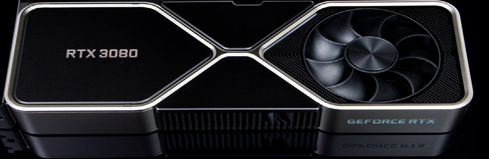

Karty grafiki z układem rtx 3080
seria rtx 30
Układy GPU z serii GeForce RTX ™ 30 zapewniają najwyższą wydajność dla graczy i twórców. Są zasilane przez Ampere - architekturę RTX drugiej generacji firmy NVIDIA - z nowymi rdzeniami RT, rdzeniami Tensor i wieloprocesorami do przesyłania strumieniowego, co zapewnia najbardziej realistyczną grafikę ze śledzeniem promieni i najnowocześniejsze funkcje sztucznej inteligencji.
ZWYCIĘSTWO MIERZONE W MILISEKUNDACH NVIDIA Reflex zapewnia najwyższą przewagę konkurencyjną. Najniższe opóźnienie. Najlepsza responsywność. Napędzany GeForce RTX 30 Series GPU i NVIDIA ® G-Sync ® monitorów hazardowej . Szybsze wykrywanie celów, szybsze reagowanie i zwiększanie precyzji celowania dzięki rewolucyjnemu zestawowi technologii do pomiaru i optymalizacji opóźnień systemu w grach wymagających rywalizacji.
DX12
Programiści mogą teraz dodawać jeszcze więcej niesamowitych efektów graficznych do gier na komputery PC z systemem Microsoft Windows. Karty graficzne GeForce RTX zapewniają zaawansowane funkcje DX12, takie jak śledzenie promieni i cieniowanie o zmiennej częstotliwości, ożywiając gry dzięki ultrarealistycznym efektom wizualnym i większej liczbie klatek na sekundę.